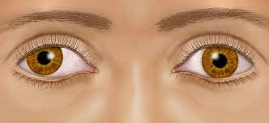

Amblyopia

SYMPTOMS:
Amblyopia is not always obvious. The condition often goes undetected until a child has an eye test. So every child should have early, regular vision screening.
You may notice symptoms. A child with amblyopia may:
-
Bump into things on a particular side a lot.
-
Experience a large difference in nearsightedness or farsightedness between the two eyes.
-
Favor one side of the body.
-
Have crossed eyes.
-
Have a droopy eyelid.
-
Shut one eye or squint a lot.
-
Frequently tilt their head to one side.
CAUSES
Amblyopia occurs when there is a major difference between the two eyes in their ability to focus. The most common cause of amblyopia is other vision problems. It’s important to treat these other conditions, or the brain starts relying on the eye with better vision, leading to amblyopia.
DIAGNOSIS
A pediatrician, school vision program, optometrist or ophthalmologist can test a child’s vision for amblyopia. The screener may:
- Put drops in the eye to make the pupil bigger.
-
Shine a light in each eye.
-
Cover one eye at a time and test whether each eye can follow a moving object.
-
Ask older children to read letters on a chart on the other side of the room.
TREATMENTS
Amblyopia treatment is much more effective if it starts early, while the connections between the eyes and brain are still developing. Strategies focus on making the child’s brain use the weaker eye. Options include:
- Eye patches for kids: Your child may wear a patch over the better eye for at least a few hours per day. This effective treatment can last months or even years. The patch forces the brain to use the images from the weaker eye, eventually making that eye stronger.
-
Glasses: Eyeglasses are also a common lazy eye treatment. They can help amblyopia by improving nearsightedness, farsightedness and eye crossing.
-
Eye drops: For mild cases, your provider may recommend eye drops (atropine) to temporarily blur vision in the better eye. The goal is the same as a patch: to force the brain to use the weaker eye.
-
Surgery: An operation for amblyopia is rare. Your healthcare provider may suggest surgery to fix certain causes of amblyopia, such as cataracts.